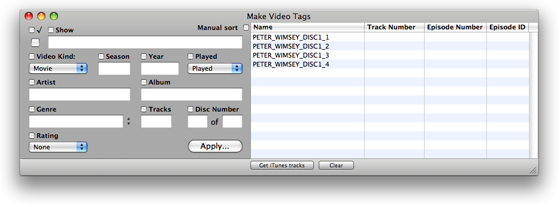

Using Make Video Tags
Step 2: Selecting Tracks
(Also see Opening Files.)
In iTunes, select some video tracks from the iTunes library or an iPod. Then activate the AppleScript "Make Video Tags" by clicking its name in the iTunes Script menu. This AppleScript will in turn activate the application Make Video Tags. The selected tracks will be listed in Make Video Tags.
Alternatively: You could select some video tracks in iTunes and then manually activate the application Make Video Tags by double-clicking its icon in the Finder. Accessing it from the iTunes Script menu is merely a convenience.
Later, after Make Video Tags is up and running you can get the currently selected iTunes tracks anytime by clicking on the "Get iTunes Selection" button.
Adding to the batch:
If tracks are already loaded in Make Video Tags and you select additional tracks or files, you will be asked if you want to add the new tracks to the current batch of tracks or clear the current tracks without saving changes.
You will not be able to select video tracks on DVDs. Nor will any non-video tracks be displayed in Make Video Tags
In these examples, I am using tracks ripped from my "Lord Peter Wimsey - Unpleasantness at the Bellona Club" DVDs.
These tracks were ripped by Handbrake. During that session, I named the files of the tracks very simply. When they are added to iTunes, the Track Name is the filename.

Initially, the tracks will be sorted automatically by Episode Number. However, in this case, since the Episode Number tags are blank, the tracks are sorted in the order in which they are selected in iTunes. (See more on Sorting.)
<- 1. Installation | 3. Entering Global Tag Information ->